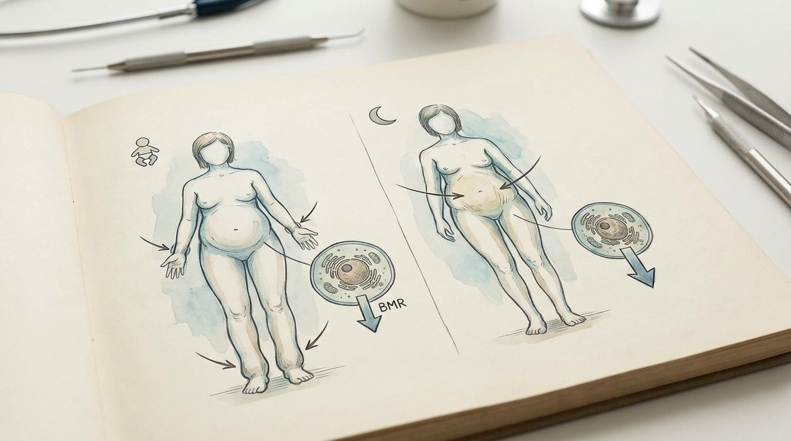

Why Does Only the Belly Remain After Childbirth or Menopause? Tailored Metabolic Diet Correction Based on Constitution and Life Stage
During the postpartum and menopausal periods, hormonal fluctuations and reduced physical activity cause a temporary decline in Basal Metabolic Rate (BMR), leading to a distinct physiological shift in which body fat is redistributed predominantly toward the abdomen. When this is accompanied by fluid retention, a metabolic characteristic forms that is difficult to correct through dietary restriction alone, necessitating a tailored metabolic correction approach that distinguishes the underlying causes based on individual constitution and life stage.
1. Medical Analysis of Metabolic Rate Decline by Constitution and Life Stage
The common complaint of ‘only the belly protruding’ shared by postpartum and menopausal women is often not simply a result of weight gain, but rather stems from hormonal changes and metabolic system reorganization unique to each life stage. After childbirth, body fat and fluids accumulated during pregnancy do not immediately return to their original state, and sleep deprivation along with altered activity patterns due to breastfeeding and childcare delay the normal recovery of Basal Metabolic Rate (BMR). During this period, a tendency for simultaneous muscle mass reduction and fat redistribution is observed, suggesting that precise correction of body composition must precede simple weight loss.
In menopausal women, a decrease in estrogen leads to a physiological shift in fat distribution patterns from the lower body to the abdominal region, naturally lowering the basal metabolic rate and causing weight gain even with the same dietary intake as before. Furthermore, in individuals exposed to chronic stress and sedentary lifestyles—such as students preparing for exams or office workers—increased sympathetic nervous tension and cortisol secretion accelerate abdominal fat accumulation, often accompanied by lower extremity edema that further reduces systemic metabolic circulation. Since the mechanisms of metabolic decline differ according to life stage and lifestyle circumstances, a diagnosis reflecting individual constitutional characteristics and current status is required rather than a uniform weight-loss approach.
2. The BodyallFit Tailored Herbal Treatment Principle: Correcting Metabolic Imbalance by Constitution, Not Simple Weight Loss

The constitution- and situation-tailored metabolic correction herbal treatment within the BodyallFit Weight Loss Program is based on the principle of differentiating the degree of fluid retention and basal metabolic rate decline that manifest differently across postpartum, menopausal, exam-prep, and office-worker situations, rather than applying an identical prescription to all patients. For postpartum women, prescription formulations prioritizing the elimination of residual bodily fluids and the recovery of uterine and pelvic circulation are utilized; in this process, preventing muscle loss (Sarcopenia) and balancing metabolism to ensure body-fat-centered reduction are treated as critical priorities.
For menopausal abdominal obesity, herbal formulations are considered to compensate for Thermogenesis function reduced by hormonal changes and to improve stagnant fluid circulation; unlike a simple appetite-suppression approach, this focuses on gradually restoring the body’s inherent metabolic capacity. In cases involving chronic edema and stress-induced cravings, as seen in students or office workers, prescriptions promoting circulatory improvement alongside autonomic nervous system balance are utilized, acting to alleviate the weight plateau phase caused by metabolic decline.
| Comparison Item | General Reduction Method | Constitution-Tailored Metabolic Correction Treatment |
|---|---|---|
| Approach Principle | Focus on calorie restriction and increased exercise | Correction after distinguishing causes of fluid retention/metabolic decline by constitution |
| Response for Postpartum Women | General dietary control recommendations | Metabolic balance combining fluid elimination and sarcopenia prevention |
| Response for Menopausal Abdominal Obesity | Setting a simple weight-loss goal | Compensating for reduced thermogenesis and improving fluid circulation |
| Sustainability | Lacking countermeasures for plateau periods | Continuous management centered on maintaining basal metabolic rate |
3. Academic Clinical Paper Analysis on Traditional Korean Medicine Principles for Correcting Constitution-Specific Metabolic Decline and Fluid Retention in Postpartum Obesity and Menopausal Abdominal Obesity
Academic research addressing body composition changes in postpartum women presents scholarly evidence for correcting postpartum metabolic status by analyzing the effects of lactation, weaning, and nutritional supplementation on body composition changes in postpartum women. Changes in body composition among lactating women identified in this study were found to be closely related to bone density and muscle mass, supporting the necessity for precise metabolic correction focused on body fat—rather than mere weight loss—to prevent sarcopenia in postpartum weight management. This correlation between nutritional intervention and body composition changes aligns academically with treatment principles aimed at maintaining basal metabolic rate (BMR) while addressing the fluid retention and metabolic decline characteristic of the postpartum period[1].
Additionally, another study addressing postpartum weight change patterns and their persistence confirmed that following childbirth, hormonal shifts and reduced physical activity often lead to a temporary reduction in basal metabolic rate (BMR) and a redistribution of body fat, representing a metabolic characteristic that is difficult to correct through dietary restriction alone. The clinical implications of these postpartum weight changes suggest the necessity for a metabolic correction-focused conservative treatment approach that moves beyond mere reliance on appetite suppressants, instead restoring basal metabolism and promoting body fat-centered weight reduction, and this can be utilized as evidence for the need for constitution-tailored treatment principles that account for fluid retention and the prevention of sarcopenia specific to the postpartum period[2]. Synthesizing this academic evidence, the BodyallFit Weight Loss Program (Metabolic Correction Protocol) may be considered one of the safe and effective conservative Traditional Korean Medicine treatment options available to postpartum and menopausal women.
4. Constitution-Tailored Reduction and Sustainable Metabolic Maintenance Solutions
Since metabolism declines through different physiological mechanisms in the postpartum and menopausal periods, an approach that distinguishes patterns of fluid retention and the need for sarcopenia prevention—rather than an identical prescription—is required. Achieving body-fat-centered reduction while maintaining the basal metabolic rate through this approach is the key to sustainable management.
The BodyallFit Weight Loss Program adheres to the principle of composing metabolic correction herbal treatments based on differing constitutional diagnoses for subjects with varying life circumstances, including postpartum women, menopausal women, and students or office workers. This focuses on helping an individual’s metabolic system restore its own balance rather than achieving short-term weight reduction, with the goal of ensuring that body fat reduction occurs while minimizing muscle loss.
This constitution-tailored approach places emphasis on alleviating the fluid retention unique to the postpartum and menopausal periods and gradually restoring the lowered basal metabolic rate to a normal range, presenting a comprehensive management direction that allows metabolic balance to be maintained even after the reduction period.
The body composition and muscle mass preservation correlations are scientifically explained through cited research study[1]. Based on these objective mechanisms, Bodyall Korean Medicine Clinic systematically applies constitution-tailored metabolic correction herbal treatments in clinical practice.